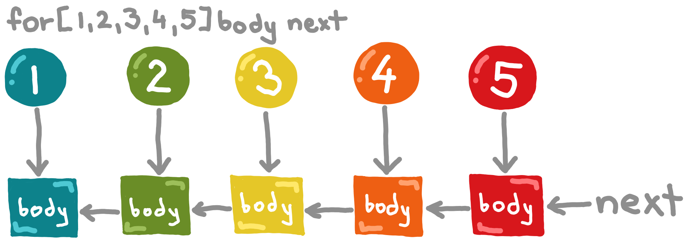

Taking off the ground

Funky is a new, small programming language that's like and unlike any other language you've seen before.
It's purely functional, doesn't cheat, but unlike most languages in this space, Funky lets you structure your code top to bottom. Idiomatic Funky code often reads like a well-written imperative algorithm. This lends code that is natural to read - yet in the end, it's basically just λ-calculus.
Funky aims for simplicity and joy. No categories, no monads, no weird abstract math operators. Nothing unnecessary. Funky is a pragmatic language for programmers.
A small warning. Funky was created from scratch. While the standard, battle-tested, functional core, like
map,filter,Maybe, etc. will be familiar to all functional programmers, many things will surprise you. For example, as we'll soon discover,letandifare not built-in to the language. Instead, they're functions just like any other. Many more surprises await you in the tour.
So, here we go!
Installing
Note. These instructions are for Linux. If you're on another operating system, you can try to follow them doing analogous actions on your OS.
Funky is currently implemented in Go and there are no pre-compiled binaries provided yet.
Therefore, the first step is to install the Go language either from the official website or from your package manager.
Go uses $GOPATH directory to download packages and install Go programs. If you installed a recent version of Go, you don't have to set it up, it defaults to ~/go.
Next you need to download Funky. You do that with the Go package manager:
$ go get -u github.com/faiface/funky/...
This downloads Funky repository to the $GOPATH/src directory and installs the binaries to the $GOPATH/bin directory.
To make the binaries easily runnable from the command line, you need to add $GOPATH/bin (or ~/go/bin if $GOPATH is not set) to the $PATH environment variable. Add this to your ~/.bashrc file (or an equivalent of that for your shell):
# replace $GOPATH with /home/yourname/go if $GOPATH is not set up
export PATH=$PATH:$GOPATH/bin
Now, one last thing. Funky uses the $FUNKY environment variable to indentify the location of the standard library. Add this to your .bashrc file:
export FUNKY=$GOPATH/src/github.com/faiface/funky/stdlib
And that's it! Let's get ready for some action!
Hello, world!
Let's make sure everything works. Open your favorite text editor and put in these lines:
func main : IO =
println "Hello, world!";
quit
Now hit the command line and type this:
$ funkycmd hello.fn
Hello, world!
There we go!
It should work. If it doesn't, go back and see if you set everything up correctly. If you did and it still doesn't work, file an issue.
Expressions and types
Funky is a strongly typed language. To explore types, Funky provides a types sandbox. It's kind of like a REPL, but it doesn't evaluate anything - just tells you the types.
Here's how we fire it up:
$ funkycmd -types
>
Note.
funkycmd -typescurrenty doesn't implement convenient things like 'arrow up' to go back to the previous entry, and so on. To get those, I highly recommend using therlwraputility. Just install it and runrlwrap funkycmd -typesand you'll get all those convenient features.
It opens up a little prompt where we can type expressions. Let's try it!
$ funkycmd -types
> 5
Int
> 3.14
Float
> pi
Float
> 'x'
Char
Details. Funky has three built-in types:
Int,Float, andChar.Ints are arbitrary-precision integers.Floats are IEEE-754 64-bit floating-point numbers.Chars are Unicode characters. All other types are either from the standard library or defined by the programmer.
How about using some operators and functions?
> 13 + 48
Int
> sqrt 4
sandbox:1:6: type-checking error
Ugh, what? A type-checking error? Yeah, that's right.
Note. The compiler error messages will get better and more descriptive.
> sqrt
Float -> Float
> 4
Int
As we can see, the type of the sqrt function is Float -> Float (a function that takes a Float and returns a Float), while the value we supplied is an Int. This doesn't match. Instead, we need to supply a Float value:
> sqrt 4.0
Float
Now this works.
Details. There are many built-in functions for each of these built-in types. Arithmetic operators (
+,-,*,/,^,%), comparison operators (==,!=,<,>,<=,>=), math functions (sin,cos,sqrt,atan2, etc.), and conversion functions (float,int, etc.). One notable thing is that you can't add characters -'a' + 'b'is not valid - but you can add an integer to a character:'a' + 2results in'c'.
Note. Unary minus is not spelled
-, butneg. The reason is that-is always infix because of its name. You can still use-in number literals, like-42.
Printing various values
We've already printed "Hello, world!", how about printing other stuff? Let's try:
func main : IO =
println 13;
quit
Try running it:
$ funkycmd hello.fn
hello.fn:2:13: type-checking error
A type-checking error again? Let's see where we went wrong. Start up the types sandbox:
$ funkycmd -types
>
And let's examine the type of the println function:
> println
String -> IO -> IO
Oh, so the println function only takes strings. Could've guessed that!
Note. Althought it might not seem like it at first,
printlnis a completely pure function. It takes two arguments: aStringand anIO. TheIOis a continuation - it says what should be done after the string gets printed. In our case, the continuation isquit(which has the typeIOitself). This instructs the program to quit after printing the string. The precise workings of this will be explained soon.
So, how do we convert an Int or a Float to a String so that we can print it?
The string function is for that purpose. Let's see what's the type of this string function:
$ funkycmd -types
> string
Int -> String
Float -> String
Bool -> String
Char -> String
String -> String
Details.
BoolandStringare not built-in, they're implemented in the standard library.
Wait, what? The string function has multiple types? That's exactly correct!
Unlike most functional languages, Funky supports overloading. That means that you can define many functions with the same name, provided they are distinguishible by their types.
Back to the printing. This now works:
func main : IO =
println (string 13);
quit
Runs as expected:
$ funkycmd hello.fn
13
Exercise. Play with various functions. Try operators like
*,^,%, math functions likesqrt,sin,log, booleanstrueandfalse, string functions++,*, and so on. The types sandbox tells you what exists and what types it has.
Semicolons and lambdas
You've probably noticed the semicolon we used in the previous part and wondered what that's for. Its meaning is actually very simple. It's used to separate the last argument to a function without the need to put it in parentheses. Let's see. Say we have an expression like this:
string (sqrt 4.0 + sqrt 9.0)
We can omit the parentheses and use the semicolon instead:
string; sqrt 4.0 + sqrt 9.0
Note. If you're familiar with Haskell, you'll notice that the semicolon is just like Haskell's
$operator. That's correct. Funky uses the semicolon instead of the dollar to avoid clutter, because it's used very frequently.
The semicolon becomes very useful when structuring code. We could write this:
func main : IO =
println "A" (println "B" (println "C" quit))
That's a completely valid code that prints three lines:
$ funkycmd abc.fn
A
B
C
Explanation. If you're having trouble understand the code above, here's an explanation. The
IOis a data structure that describes what the program should do. The simplestIOvalue isquit. It simply instructs the program to quit.The type of the
printlnfunction isString -> IO -> IO. That means thatprintlntakes two arguments, aStringand anIO, and evaluates to anIO. The resultingIOdescribes a program that first prints the provided string, then does whatever the second argument says.Let's look at the inner-most (last) usage of
printlnin the above code:println "C" quit. This expression of typeIOdescribes a program that prints the string"C"and then quits. Since it is anIO, we can pass it as the second argument to anotherprintlnand we getprintln "B" (println "C" quit). And using the same technique once again, we end up with the code above.
But, we have a lot of parentheses there! Let's get rid of them with those semicolons:
func main : IO =
println "A"; println "B"; println "C"; quit
Note. We technically don't need the last semicolon as
quitis just a single word, but we'll leave it there for style.
And finally, we can split it into mutliple lines:
func main : IO =
println "A";
println "B";
println "C";
quit
Now that's cool! It's got lines, it's got semicolons, looks just like an imperative code! Of course, I'm joking a bit here, but it's not that bad, is it?
The if function
Booleans have type Bool, two values - true and false - and a handy if function for making a choice. What's its type? The beloved types sandbox comes to rescue:
$ funkycmd -types
> if
Bool -> a -> a -> a
The little a is a type variable. You can replace it with any type whatsoever and if will conform to that type. Of course, you must replace all occurences of a consistently. So if can be used as Bool -> Int -> Int -> Int, or as Bool -> IO -> IO -> IO, but not as Bool -> Int -> IO -> Float.
The if function checks whether the condition (the first argument) is true or false. If it's true, the second argument is returned. Otherwise, the third argument is returned. For example:
> if true 1 3 # evaluates to 1
Int
> if (4 < 1) "YES" "NO" # evaluates to "NO"
List Char
Note. Comments start with the
#symbol. Also notice thatStringandList Charare synonyms.
Combining the if function with the semicolon, we create an if, else if, else chain:
if (guess > correct) "Less.";
if (guess < correct) "More.";
"Correct!"
Isn't this beautiful? A single function suitable both for a one-line choices and for a series of mutually exclusive branches.
Lambdas
Funky has a very concise syntax for anonymous functions. That's crucial because just like semicolons, anonymous functions are used all over the place. Here's how you write them:
\variable result
That's it. A backslash, the name the variable, and an expression to evaluate to.
Important. All identifiers in Funky are allowed to contain almost arbitrary Unicode characters. That's because tokens are generally separated by whitespace. The only exceptions are the symbols
(,),[,],{,},,,;,\, and#that are always parsed as separate tokens.Therefore, idiomatic naming in Funky is very similar to the one in LISP. Dashes
are-usedinsteadof_underscores, functions returningBool(predicates) usually end with the?symbol, and partial functions (those that can crash) end with the!symbol.
Functions of multiple arguments are just functions that take the first argument and return a function taking the rest of the arguments (currying):
\x \y x + y
Funky uses lazy evaluation. That means that arguments to functions are only evaluated when their value is needed. For example, the factorial of 20 is never calculated here:
(\n 3) (factorial 20) # evaluates to 3
Also, the factorial of 10 is only computed once, not twice here:
(\n n + n) (factorial 10)
The let function
The let function? Not a let keyword? Let's verify this:
$ funkycmd -types
> let
a -> (a -> c) -> c
Note. It really should be
a -> (a -> b) -> b. Will be fixed.
Uhm, so let takes a value and a function. Yep, and then it passes the value to the function and evaluates to whatever the function evaluates to. Maybe a bit hard to understand, so let's see:
func main : IO =
println (string; let 7 (\x x + x));
quit
See that let 7 (\x x + x) there? From what I've said, let should pass the 7 to the (\x x + x) function and thus the program should print 14. And in fact that's exactly what happens:
$ funkycmd let.fn
14
But as you've probably guessed, this is not the idiomatic use of let. Let's take a closer look:
let 7 (\x x + x)
That's pretty ugly! There's one syntactic feature, though, that we haven't talked about yet. If a lambda is the last argument to a function, which it is in our case, we can drop the parentheses. Like this:
let 7 \x x + x
And what now? Split it into multiple lines!
let 7 \x
x + x
Now it's starting to look like something. It looks like we've assigned the value 7 to the variable x and then went on to the next code. And that's precisely how we should think about it. In fact, we can restructure our little program above like this:
func main : IO =
let 7 \x
println (string; x + x);
quit
In this case, the type of the let function got specialized to Int -> (Int -> IO) -> IO, but the result is the same.
So, that's how you assign variables in Funky.
A bit more about IO
Funky has an unusual approach to side-effects. There's no notion of them in the language itself. What looked like side-effecting functions in the previous sections (println, quit, etc.) were in fact data structure constructors. The IO type is not magic at all. It's just a plain data structure defined in the Funky language itself. Here's its definition (you can also find it in the standard library in the cmd folder):
union IO = quit | putc Char IO | getc (Char -> IO)
We haven't covered union yet but think algebraic data types (e.g. data in Haskell). This IO data structure serves as a description of what the program should do. However, in contrast with the control flow of traditional imperative languages, the IO data structure can be arbitrarily manipulated - e.g. it's no problem to implement input/ouput encryption just by implementing a single IO -> IO function.
Note. The
IOdata structure is very limited. All it can express is printing and scanning characters. The thing we haven't talked about yet is thatfunkycmdis just one of the many possible side-effect interpreters. Specifically,funkycmdinterprets (executes) the aboveIOdata structure. There's another interpreter calledfunkygamethat interprets an entirely different data structure which describes sprite-based games. You can actually make your own side-effect interpreter fairly easily. The specifics of that are explained in the TODO section.
The IO looks like a linked list with two kinds of nodes (not counting quit). The funkycmd interpreter loads the main function, walks the IO nodes, and does as they say.
Let's talk about the nodes individually.
-
quit. We've seen this one before - it marks the end of the program. -
putc. This node has two arguments: aCharand anIO. TheCharis the character to be printed. TheIOtells what should be done next. -
getc. Now this one looks strange. It has one argument: a function. The function takes aCharand returns anIO. Here's howfunkycmddeals withgetc: Upon encountering thegetcnode,funkycmdscans a character from the standard input. Then it takes the function undergetcand applies it to the scanned character, passes it inside. The function gives back anIO. ThisIOtells what should be done next.
Now let's see them in action!
How about a very exciting program that reads a character and prints it back?
func main : IO =
getc (\c putc c quit)
Run it:
$ funkycmd getcputc.fn
x
x
It worked!
Now, we can structure the code better using the same tricks we used with if and let. How does this look?
func main : IO =
getc \c
putc c;
quit
Well, that's nice! The first line scans a character, the second line prints it back, the third line quits the program.
Wait, what would happen if we made it recursive? What if we replaced quit with main?
func main : IO =
getc \c
putc c;
main
By the looks of it, this program should print back all of its input - it's the cat program.
Note. But it never quits! Or does it? Currently,
funkycmdis made to silently quit when encountering the EOF, so the program quits correctly. Of course, this behavior is not guaranteed to be kept.
$ funkycmd cat.fn
hello, cat!
hello, cat!
do you cat?
do you cat?
you do cat!
you do cat!
^D
The ^D sequence at the end is the EOF.
Scanning more than one character
The standard library gives us many goods. There's print and println that work by expanding to multiple putc nodes. Are there some analogous high-level functions for scanning? Sure there are! They're called, how unexpected, scan and scanln. What are their types:
$ funkycmd -types
> scan
(String -> IO) -> IO
> scanln
(String -> IO) -> IO
Oh nice, so their type is the same as the type of getc, except the Char is changed to String.
The scanln function scans a whole line and gives it back to you (not including the newline character). The scan function is a little more clever: it reads the next "word" from the input - it skips all the whitespace and captures a continuous string of non-whitespace characters.
We'll get to use scan more in the next section. Here's some scanln for the taste:
func main : IO =
print "What's your name? ";
scanln \name
println ("Hello, " ++ name ++ "!");
quit
And there we go:
$ funkycmd greeting.fn
What's your name? Michal Štrba
Hello, Michal Štrba!
Putting it together: a calculator
We've covered a few basic functions, now we'll put them to the test! We'll make a little calculator. The program is simple but nicely demonstrates how all the functions we've talked about work together. Let's see!
The calculator will work something like this:
$ funkycmd calculator.fn
2 + 2
4
9 / 2
4.5
12 * 12
144
It will support four operators: +, -, *, /. It will only support one operator per expression.
The first thing will be to scan the expression. The expression consists of three words on a single line, so it'll be best to use scan three times:
func main : IO =
scan \x-str
scan \op
scan \y-str
# TODO
Good. Now, x-str and y-str are strings, because that's what scan gives us. In order to perform computations, we need to convert them to floats first.
$ funkycmd -types
> float
Int -> Float
String -> Float
The second overload of the float function seems to be doing just that, so let's use it (there's an analogous function for integers called int):
func main : IO =
scan \x-str
scan \op
scan \y-str
let (float x-str) \x
let (float y-str) \y
# TODO
We saved the converted numbers in the x and y variables.
Now we need to compute the result and print it. For example, if the operator is +, the result will be string; x + y. Here we can exploit the if function's ability to form if/else chains:
if (op == "+") (string; x + y);
if (op == "-") (string; x - y);
if (op == "*") (string; x * y);
if (op == "/") (string; x / y);
"invalid operator: " ++ op
The last line becomes the result if the operator is not among the supported ones. Now that we've got the result, all that's left it to print it and continue the loop:
func main : IO =
scan \x-str
scan \op
scan \y-str
let (float x-str) \x
let (float y-str) \y
println (
if (op == "+") (string; x + y);
if (op == "-") (string; x - y);
if (op == "*") (string; x * y);
if (op == "/") (string; x / y);
"invalid operator: " ++ op
);
main
And that's it! Now go and experiment yourself! When you come back, we'll start learning about making our own functions and types.
Making the world our own
A newborn child emerges in the world of established, yet ever-changing rules, objects, communities, organizations, conventions and accepts them - the status-quo. Then later in life they learn how to bend things, and how create entirely new ones. They learn how to make the world their own.
The *pretentious* little piece above is not entirely out of place. Until now, you've been learning about a few established functions and concepts in the Funky programming language. Now we'll learn how to create our own!
Functions
So far, we've only seen one function defined: the main function. But even from that alone I'm sure you've already guessed how function definitions look. They're quite simple:
func name : type = body
That's it!
The name can be any string of non-whitespace characters excluding keyword symbols like parentheses, a backslash, a semicolon, and a few others.
The type specifies the type that the function name will aquire.
The body is an arbitrary Funky expression, functions, lambda, etc. can be used. The only limitation is that it must conform to the type.
Details. Let's talk a bit about types.
As we've already learned, there are three built-in types:
Int,Float, andChar. There are also a few types from the standard library, such asBool, orString.Then there are types that take other types as arguments - a types that are, so called, generic. The most important of such generic types is the function type. This is also actually built-in, but since it's a type constructor, rather than a full, distinct type, I haven't included it among the built-in types previously.
The function type constructor is called 'the arrow', written as:
->. It takes two arguments, the input type on the left and the output type on the right. For example,Int -> Boolis a function that takes anIntand evaluates to aBool.
So, let's define a function! Every functional language tutorial must include a factorial example, so let's get that behind us:
func factorial : Int -> Int =
\n
if (n <= 0) 1;
n * factorial (n - 1)
func main : IO =
print "Type a number: ";
scanln \n-str
let (int n-str) \n
println (string; factorial n);
quit
A standard, well known, recursive factorial definition.
Note. In Funky it's a convention to put arguments on the next line after
=in the function definition. If the function is very short, this convention may be broken and the whole definition may sit on a single line.
Details. The order of definitions doesn't matter. A function doesn't have to be 'defined before use'. All that matters is that it is defined.
Let's try it:
$ funkycmd factorial.fn
Type a number: 5
120
If it gives 120 for 5 then it surely works. Let's try something bigger:
$ funkycmd factorial.fn
Type a number: 99
933262154439441526816992388562667004907159682643816214685929638952175999932299156089414639761565182862536979208272237582511852109168640000000000000000000000
Whoa, that's a number! You can try entering even bigger inputs, but don't go too big... you may freeze your system.
Now, how about functions with multiple arguments? Say we want to make a function called divides that tells us whether one integer divides another or not.
In Funky, as in many other functional languages, there are no functions of more than one argument. Instead, there are functions that return functions. A function of two arguments really is a function that takes the first argument and returns a new function. This new function remembers the first argument and takes the second one.
What would be the type of such a function?
The type Int -> (Int -> Bool) would do. It takes the first Int, evaluates to a function taking the second Int and finally evaluates to Bool.
Great, now how would we call such a function?
Using (divides 9) 3 would obviously work. But, we don't really need the parentheses. If parentheses are not present, they're implicitly from the left, so divides 9 3 is good too.
Furthermore, the parentheses in the type Int -> (Int -> Bool) aren't needed either. Since -> is used infix, it's automatically parenthesized from the right, so Int -> Int -> Bool is equivalent.
Details. There are two kinds of functions in Funky: prefix and infix. Infix functions can be identified easily: they don't contain any letters. All other functions are prefix.
Applications of prefix functions are automatically parenthesized from the left if no explicit parenthesis are present. In all cases,
f x yis the same as(f x) y.Applications of infix functions are, however, automatically parenthesized from the right. All of them have the same precedence. This is to simplify programmer's life: when defining own infix functions, you won't be bothered by specifying precedence levels or associativity. So,
3 * 2 + 1is equivalent to3 * (2 + 1).
After learning about automatic parentheses (also called left/right-associativity), here's the definition of divides:
func divides : Int -> Int -> Bool =
\m \n
(n % m) == 0
The body is just two lambdas nested inside one another, which perfectly reflects the type.
We could've also called the function /?, in which case it would be an infix function. However, the name divides is much more descriptive.
Function types may also contain type variables. These are distinguished from actual types by being all lower-case. Actual types must contain an upper-case character - type variables must not.
When a function has a type variable in its type, that means that this function is fine with whatever type instead of that variable. For example, there's this (probably controversialy named function, usually it's called id) function called self:
$ funkycmd -types
> self
a -> a
It doesn't do anything. It just returns whatever it was passed. For example, self 4 is 4. Now, when we passed 4 to self, its type changed a bit. It specialized. It became Int -> Int. See? We get this specialization just by replacing a with Int in the type. That's how type variables work.
Overloading
Words in natural language usually don't have just one meaning: "If only there was a way we could continue that way, we could've been way ahead of them, but in a way, we haven't done so bad." The previous sentence used four different meanings of the word 'way'.
Using same words for different, or slightly different meanings in different contexts allows for very concise and expressive speach. Imagine that we'd have to invent a brand new word every time we'd like to add a new meaning to an existing word. That would be cumbersome and unnatural.
Programming is no different. When designing Funky, I realized that support for function overloading brings so many benefits that I couldn't ignore it despite the initial difficulty of implementation.
So, let's try it!
func double : Int -> Int =
\x x * 2
func double : Float -> Float =
\x x * 2.0
func main : IO =
println (string; double 9);
println (string; double 4.3);
quit
There we go, two versions of double: one for Ints, one for Floats. Let's run it!
$ funkycmd double.fn
18
8.6
Works like charm!
Now, how about defining two functions like this?
func zero : Int = 0
func zero : Float = 0.0
func main : IO =
println (string zero);
quit
This time, both versions of zero fit the context because string works for both Ints and Floats. What does the type checker say?
$ funkycmd zeros.fn
zeros.fn:6:21: ambiguous, multiple admissible types:
Int
Float
That's right, the type checker complains. We can fix this error with a type annotation. You can add an explicit type to any expression using the : symbol:
func zero : Int = 0
func zero : Float = 0.0
func main : IO =
println (string (zero : Int));
quit
All is fine this time:
$ funkycmd zeros.fn
0
Well, okay, those two zero functions are distinguishible by their type. But what if we put the same type?
func lucky-number : Int = 7
func lucky-number : Int = 3
func main : IO =
println (string lucky-number);
quit
Which one gets printed? 7 or 3? Make your guesses, ladies and gentlement...
Here's what happens:
$ funkycmd lucky-number.fn
lucky-number.fn:2:27: function lucky-number with colliding type exists: test.fn:1:27
Oh, no! It didn't even let us define the second function, because its type collides with the first one.
Funky doesn't let you overload a function if its type collides with an existing version.
Details. When exactly do two types collide?
Do these two functions collide?
func weirdo : a -> a = self func weirdo : Int -> Int = (* 2)Indeed, they do! You might argue that the second one is more specific than the first one, so if both fit the context, the second one should be selected, but this doesn't fly in Funky, because it brings a whole bag of problems.
Instead, I chose simplicity: two types collide whenever their type variables can be substituted such that they become the same type.
For example:
a -> Intcollides withFloat -> a(substitutes toFloat -> Int).
Records
Now onto creating our own types!
I'm sure you're familiar with structs from C or records from Pascal. They simply group multiple values into a single value. Records in Funky are very much the same.
They're defined like this:
record Name = field : type, ...
For example:
record Person =
name : String,
age : Int,
Note. Trailing comma is allowed.
The Person type is now a new, non-reproductive way of creating people (pretty revolutionary if you think about it). How do we create one?
Whenever we define a record, Funky generates a constructor function with the same name. Let's see!
$ funkycmd -types person.fn
> Person
String -> Int -> Person
Basically, it takes values for the name and the age and gives us a fully fledged person. Great!
record Person =
name : String,
age : Int,
func main : IO =
let (Person "Joe" 28) \joe
quit
We've got Joe! How do we use him?
In addition to the constructor function, Funky generates two functions per field: a getter and an updater. Name of both of the functions is the same as the name of the field:
$ funkycmd -types person.fn
> name
Person -> String
(String -> String) -> Person -> Person
The type Person -> String is the getter. It works just as you'd expect:
record Person =
name : String,
age : Int,
func main : IO =
let (Person "Joe" 28) \joe
println (name joe);
quit
Running it:
$ funkycmd person.fn
Joe
The updater with the type (String -> String) -> Person -> Person is a little more... funky.
Here's what it does: it takes a function and a person. It returns a new person that is the same as the old one, except with the field modified by the function.
Let's see:
record Person =
name : String,
age : Int,
func main : IO =
let (Person "Joe" 28) \joe
let (name (++ ", yo!") joe) \joe # shadows the previous joe variable
println (name joe);
let (age (+ 1) joe) \joe # Joe had a birthday!
println (string; age joe);
quit
And run it:
$ funkycmd person.fn
Joe, yo!
29
Note. If you want to replace the field's value by some other value, you can use the
constfunction like this:name (const "Joseph") joe(changes the name to"Joseph"). The functionconstmakes a function that, taking any input, always evaluates to a constant. So,(const "Joseph") 12evaluates to"Joseph".
Composing getters and updaters
The signatures of the getters and the updaters are not random. They enable some really cool stuff! We'll check it out now.
I'll show it to you on these two records:
record Point =
x : Int,
y : Int,
record Line =
from : Point,
to : Point,
Okay, now, say we have a Point, let's call it pt. To get the X coordinate we do x pt and to get the Y coordinate we do y pt. Easy! To move the X coordinate 10 units to the right, we do x (+ 10) pt and to set the Y coordinate to 0 we do y (const 0) pt.
Okay, now say we have Line. Let's call it line. The line has two points: from and to. What if we want to move the X coordinate of the first point by 10?
Now, here comes the cool part! All we need to do it to realize, that
x (+ 10)
is a partial application of the x updater and has type Point -> Point. But, any Point -> Point can be used in the from updater:
from (x (+ 10)) line
Lastly, we can clean it up with the function composition operator:
(from . x) (+ 10) line
Note. The function composition operator
.works like this:(f . g) x = f (g x). So you see we've just rewritten the previous expression using this formula.
Details. In Funky, the function composition operator is overloaded a few times in the standard library, namely for when the second function takes multiple arguments. For example, one of the overloaded versions works like this:
(f . g) x y = f (g x y). That way, writing(concat . map)works exactly as you'd like to. The type checker can always tell which version fits the context.
And that's it! That's pretty clean, isn't it?
Getters can be composed similarly, except in the opposite order:
(y . to) line
That's the Y coordinate of the last point.
Getters and updaters also have a very important role when it comes to expressing state flow with the State type as we'll cover in the TODO part. In short, they enable record fields to act as mutable variables in an imperative algorithm.
Unions
The second way of creating new types is unions. While a record is a collection of fields, a union defines multiple alternative forms.
Here's the general form:
union Name = alternative argument ... | ...
The three dots after argument mean that a single alternative can contain any number of arguments (fields) and the three dots after | mean that a union can have any number of alternatives.
Unlike records, arguments for alternatives have no names, only types.
Here's a simple union:
union Bool = true | false
This is the actual definition of the type Bool from the standard library. The alternatives have no arguments in this case.
Here's another example:
record Point = x : Float, y : Float
union Shape =
line Point Point |
circle Point Float |
Note. Trailing
|is allowed.
The Shape type has two alternatives: the line alternatives, which is composed of two points, and the circle alternatives, which has a point (the center) and a float (the radius).
When we define a union, Funky generates a constructor function for each alternative. The function simply takes all the arguments in order. Let's check them out!
$ funkycmd -types shapes.fn
> line
Point -> Point -> Shape
> circle
Point -> Float -> Shape
> line (Point 1.0 8.0) (Point 12.5 -4.9)
Shape
> circle (Point 0.0 0.0) 7.0
Shape
They definitely work!
To examine a Shape value and make a decision based on whether it's a line or a circle, Funky provides the switch/case construct. It's best shown by an example. Here's a function that calculates the length of a line or a circumference of a circle:
func length : Shape -> Float =
\shape
switch shape
case line \from \to
hypot (x to - x from) (y to - y from)
case circle \center \radius
2.0 * pi * radius
Note. The
hypotfunction stands for 'hypotenuse' and is used for calculating the length of the long side of a right triangle using the Pythagorean theorem:hypot x y = sqrt ((x ^ 2.0) + (y ^ 2.0)).
As you can see, the switch/case construct begins with the switch keyword followed by the value we're switching on. After that, we see a series of case branches. Each branch starts with the case keyword followed by the name of the alternative. That is followed by a function that takes the arguments to the alternative and evaluates to the overall result.
Of course, all case branches must evaluate to the same type: Float, in our case.
Note. Currently, all alternatives must be present in
switch/caseand they must be listed in the same order as they are in the definition of the union. This will be fixed.
The names of the alternatives can also be infix if they don't contain any letters. When they are infix, they can be placed between their arguments in the definition.
For example, here's a nice, recursive union for building up arithmetic expressions:
union Expr =
num Int |
Expr + Expr |
Expr * Expr |
It's either just a number, like num 12, or it's an addition, or a multiplication: num 12 + num 7, or (num 1 + num 9) * ((num 4 + num 3) + (num 2 * num 2)).
Note. The alternatives can be called
+and*without a problem thanks to overloading.
To evaluate an expression like that, we make use of switch/case again:
func eval : Expr -> Int =
\expr
switch expr
case num
self
case (+) \left \right
eval left + eval right
case (*) \left \right
eval left * eval right
Have you noticed that no lambda comes after case num? That's because the case bodies need not explicitly contain lambdas, all they need is a function. In this case, self (the identity function) is the right choice because it just evaluates to the number under num.
Let's see if eval works right!
union Expr =
num Int |
Expr + Expr |
Expr * Expr |
func eval : Expr -> Int =
\expr
switch expr
case num
self
case (+) \left \right
eval left + eval right
case (*) \left \right
eval left * eval right
func main : IO =
let ((num 1 + num 9) * ((num 4 + num 3) + (num 2 * num 2))) \expr
println (string; eval expr);
quit
And run it:
$ funkycmd expr.fn
110
Works great!
Type variables in types
So far we've only defined types that were concrete, with no type variables anywhere. But it's also possible (and very useful) to define generic types: types parameterized by one or more type variables.
It's really simple.
All we need to do is to list the type variables after the name of the type in the definition:
record Pair a b =
first : a,
second : b,
That's an actual definition of the Pair type from the standard library.
Or here's another example:
union Maybe a = none | some a
That is, likewise, the definition of the Maybe type from the standard library.
This way, Pair and Maybe don't define a single type each. Instead, each defines a family of types: Pair Int Float, Pair String Bool, Maybe (String -> String), Maybe (Pair Int Int) all belong to those families.
Note. 'Type family' is not a concept in Funky, it's just a phrase we use to talk about types.
Pairwithout its type variables filled in is always an error.
Aliases
Aliases are sooo simple! Too simple. All they do is they define a new name for an existing type:
alias Name = type
That's it!
The String type is an alias:
alias String = List Char
Therefore, String and List Char are perfect synonyms.
Of course, aliases can also contain type variables and have one interesting, although not very useful feature: they can be recursive. I haven't found a situation yet where a recursive alias would be needed, but I'll leave that up to you. ;)
The other half of the language
For loop is a function
Lists. They are the butter and bread of functional programming and possibly my favorite data structure ever.
This is how they are defined in the standard library:
union List a = empty | a :: List a
It's a trivial linked list, which means you can't access elements randomly, you always have to traverse them in order.
As you can see, lists can either be empty, or have a first element and a rest of the list. Using the :: constructor repeatedly allows for creating longer and longer lists:
empty
1 :: empty
1 :: 2 :: empty
1 :: 2 :: 3 :: 4 :: 5 :: 6 :: 7 :: empty
And using recursion, one can even create infinite ones:
func one-two-three : List Int = 1 :: 2 :: 3 :: one-two-three
This doesn't enter an infinite loop because Funky is a lazily evaluated language.
Of course, typing colons all the time would be tiresome, and so Funky provides a nice syntax suggar with the usual square brackets.
["a", "b", "c", "d"]
Expands to:
"a" :: "b" :: "c" :: "d" :: empty
Well, actually... since the String type is defined as List Char, the string literals must also get expanded to colons, right? Yep, so the full expansion actually is this monstrosity:
('a' :: empty) :: ('b' :: empty) :: ('c' :: empty) :: ('d' :: empty) :: empty
After seeing this, I'm sure you're way more grateful for all the string and list syntax suggar than you've ever been before.
All the "cool functional stuff"
With lists comes the legacy of tools, perfected and sharpened for long generations. Let me (re)introduce you to map and filter.
The function map simply applies a function to all of the elements of the list:
map sqrt [1.0, 4.0, 9.0, 16.0] # => [1.0, 2.0, 3.0, 4.0]
map (* 3) [5, 1, 3, 2] # => [15, 3, 9, 6]
The function filter takes a predicate and filters out all the elements that don't satisfy it:
filter (< 5) [9, 3, 4, 7, 5, 10, 1] # => [3, 4, 1]
filter even? [1, 2, 3, 4, 5, 6, 7] # => [2, 4, 6]
Then there is a nice zip function which "zips" two lists with some binary function (it's like zipWith from Haskell; the zip function from Haskell can be done with zip pair in Funky). It takes the first elements from both lists, applies the function to them, and goes on, like this:
zip (*) [1, 2, 3] [2, 3, 4] # => [2, 6, 12]
zip (++) ["he", "wo"] ["llo", "rld"] # => ["hello", "world"]
The zip function enables this ultra cool hipster fibonacci one liner:
func fibonacci : List Int =
0 :: 1 :: zip (+) fibonacci (rest! fibonacci)
Details. The
rest!function returns the list except its first element and crashes if the list is empty, therefore the!sign. For example,rest! [1, 2, 3]evaluates to[2, 3]. Similarly, there is afirst!function that evaluates to the first element of the list.These functions also have their non-crashing versions without the
!signs that returnMaybes (optional values, we'll learn more about them). For example,first ["a", "b", "c"]evaluates tosome "a", whilefirst []evaluates tonone.
There are more list functions, like fold< and fold> (those are same as foldr and foldl' in Haskell), but we'll not give them too much attention, you can try them out on your own. For example, here's how you'd sum a list of numbers with fold>:
fold> (+) 0 (range 1 15) # => 120
Other list functions include reverse, take, drop, any, all, iterate, and so on. The usual ones.
How to print a list? Meet the for loop
Now, all that stuff is cool, but if we can't print a list, it's all useless, right? Well, this leads us to a very interesting function from the standard library called for. Yes, the name is intentionally chosen to match the name of the old imperative concept - the for loop. Of course, loops in imperative programming rely on mutation of the loop variables. We can't do that in functional programming, but our for loop will be just as ergonomic as the imperative one.
So, what's the type of this mighty for function?
$ funkycmd -types
> for
List a -> (a -> c -> c) -> c -> c
It takes three arguments. Here's what they are and how you can think about them:
- List (type
List a). This is the list of things we want to loop over. - Body (type
a -> c -> c). You can think of this as something we want to "do" for each element. - Next (type
c). This will get "done" after getting over with all the elements.
Obviously, the descriptions above are rather innacurate. We can't do anything, we can only make values and data structures.
The best way to explain what for does is to start with an example. So, let's print a list:
func main : IO =
for ["A", "B", "C"]
println;
quit
Oh man, that looks imperative! Does it even work?
$ funkycmd for.fn
A
B
C
It does!
We've passed ["A", "B", "C"] as the list to for. Then we passed println as the body. The println function perfectly fits the required type of the argument: a -> c -> c, specialized to String -> IO -> IO in our case. Because println takes and returns IO, the last argument to for must be an IO. So we passed quit.
As we already know, println constructs the IO data structure and the same goes for quit. So for is in fact just applying functions in some way. What could that way be?
First of all, if we pass an empty list, we just get the next back.
for [] body next # => next
If we pass a single element list, we get the body applied to the element and the next:
for [a] body next # => body a next
What about a two element list? Well, that looks like this:
for [a, b] body next # => body a (body b next)
Three elements?
for [a, b, c] body next # => body a (body b (body c next))
In other words:
for (x :: xs) body next
is equivalent to:
body x (for xs body next)
which can be easily rewritten to:
body x;
for xs body;
next
The working of for can also be seen on the following diagram:

Note. Yes,
foris exactly the same function asfold<, except with a different order of arguments.
Knowing this, it's easy to see that our list printing program:
func main : IO =
for ["A", "B", "C"]
println;
quit
basically expands to this:
func main : IO =
println "A";
println "B";
println "C";
quit
It's all very clear now!
The next argument doesn't have to be just a quit. It can be more complex:
func main : IO =
for ["A", "B", "C"]
println;
println "Done!";
quit
or even another for loop:
func main : IO =
for ["A", "B", "C"]
println;
println "First half!";
for ["D", "E", "F"]
println;
println "Second half!";
quit
With the semicolon, we can get much of the convenient code structuring of imperative programming. Without monads!
How to print lists of numbers?
If we change the list to a list of numbers, the scheme no longer works:
func main : IO =
for (range 1 5)
println;
quit
Details. The
rangefunction takes the lower and the upper bound and evaluates to a list of all integers in between, including the bounds.
Trying to run this gives us an error:
$ funkycmd for.fn
for.fn:3:9: type-checking error
That's quite obvious. We have a list of Ints, but println takes a String. This can be fixed by composing println with string, which converts Ints (and is overloaded for other types) to Strings:
func main : IO =
for (range 1 5)
(println . string);
quit
This time, it works!
$ funkycmd for.fn
1
2
3
4
5
How to put more things in a body?
So far, we've only seen a simple function, or a composition of two functions as the body argument to for. What if we want to have a more elaborate loop body? Say a two printlns for the start.
You might be tempted to try this:
func main : IO =
for (range 1 5)
(print "#"; println);
quit
But that just doesn't work. We can't pass println as the second argument to print, that's just nonsense, it expects an IO, not String -> IO -> IO.
Here's what we need to do. Let's start with the simple for loop on strings.
func main : IO =
for ["A", "B", "C"]
println;
quit
Instead of just passing the function println itself, let's make it a lambda:
func main : IO =
for ["A", "B", "C"] (
\s \next
println s;
next
);
quit
The body of the for loop takes two arguments: the element of type String, and the continuation of type IO. We pass both of these to the println function, recreating the original, short for loop. This doesn't at all change the behavior of the program.
However, as you can surely see, it's very straightforward to add more "statements" to the body:
func main : IO =
for ["A", "B", "C"] (
\s \next
print "- ";
println s;
next
);
quit
Let's run it!
$ funkycmd body.fn
- A
- B
- C
We can even add scans to the loop!
func main : IO =
print "What's the number of questions? ";
scanln \n-str
let (int n-str) \n
for (range 1 n) (
\i \next
print ("Your question #" ++ string i ++ ": ");
scanln \question
println "The answer: IDK.";
next
);
quit
Let's run this funny program:
$ funkycmd questions.fn
What's the number of questions? 3
Your question #1: What's your name?
The answer: IDK.
Your question #2: How are you doing IDK?
The answer: IDK.
Your question #3: Do you know anything?
The answer: IDK.
And you can even nest loops! Here's a program that prints out the small multiplications table... in a non-tabular form, but that's okay.
func main : IO =
for (range 1 10) (
\x \next
for (range 1 10) (
\y \next
print (string x);
print " x ";
print (string y);
print " = ";
println (string (x * y));
next
);
next
);
quit
Note. Those multiple prints aren't necessary, it could've all been done with one long string concatenation. Splitting it into multiple lines just makes it clearer. This problem will go away once there is a better way to format strings.
And run it!
$ funkycmd multiplications.fn
...
5 x 7 = 35
5 x 8 = 40
5 x 9 = 45
5 x 10 = 50
6 x 1 = 6
6 x 2 = 12
6 x 3 = 18
6 x 4 = 24
6 x 5 = 30
6 x 6 = 36
6 x 7 = 42
6 x 8 = 48
6 x 9 = 54
6 x 10 = 60
7 x 1 = 7
7 x 2 = 14
7 x 3 = 21
7 x 4 = 28
7 x 5 = 35
...
It works! I didn't show the whole output, because that's too large, but you get the idea.
That's it for this part, in the next part, we'll learn more list tricks!
Yield it all!
You though vertical code was just for IO? You were wrong! Vertical code (the one that spans vertically and can be read top to bottom) is quite universal in Funky. In this part, we'll see how it can be applied to lists and their generation.
The yield function
The basic list constructor, the double colon, is an infix function. That makes it unusable for vertical code. However, the standard library defines a synonym of :: called yield:
func yield : a -> List a -> List a = (::)
It's a literal synonym. But, it's a prefix function. How does that help?
Take this list:
[1, 2, 3]
Rewrite it with the colons:
1 :: 2 :: 3 :: empty
Cool. Now, how would this look if we used yield instead?
yield 1 (yield 2 (yield 3 empty))
All we did was replace all ::s with yields. And here it comes. Can you see it? We can use the semicolon and make it vertical!
yield 1;
yield 2;
yield 3;
empty
Beautiful!
To get to know yield a little better, let's use it to rewrite some well known functions. How would the map function look like using yield? Something like this:
func my-map : (a -> b) -> List a -> List b =
\f \list
for list (
\x \next
yield (f x);
next
);
empty
The for function isn't just for IO. It can be used with anything that composes vertically. We take the function f and the list and we yield all of its elements in order, except we transform them with f.
We can even make the code shorter with function composition:
func my-map : (a -> b) -> List a -> List b =
\f \list
for list (yield . f);
empty
That's really nice.
The when function
How would filter look like with yield? In the case of filter, we can't yield all the elements of the list. We must only yield those that satisfy the predicate. That's where the when function comes handy:
$ funkycmd -types
> when
Bool -> (a -> a) -> a -> a
It's kinda similar to if, but different. While if chooses between two alternatives, when conditionally applies its second argument (the body) to the third (the next). Specifically, when works like this:
when true body next # => body next
when false body next # => next
For example:
when (x > 7) (1 +) x
This expression evaluates to x + 1 if x is more than 7, otherwise it evaluates to x.
So, let's use when to implement my-filter!
func my-filter : (a -> Bool) -> List a -> List a =
\p \list
for list (
\x \next
when (p x) (yield x);
next
);
empty
That's it! Here, we can't easily compress the loop body into some stunning composition, but so what. It isn't that bad anyway.
Formatting lists
Structuring list generation vertically comes very handy when dealing with complex list generating functions. One of the best examples is a function to format lists so that we can print them with one println. Such function isn't currently present in the standard library. But we'll make our own!
First, we gotta choose the type. What could it be? Perhaps this one?
List a -> String
Well, this is what it will be in the future, when the with clause gets implemented, but so far, we can't do it that way. Why? We're accepting List a: a list of any type. To convert it to string, we need to convert each of its elements to string. But, there's no general way of converting an arbitrary type to string - the string function is only implemented for a handful of types.
This will do:
(a -> String) -> List a -> String
In addition to the list itself, we'll accept a function that helps us convert the elements to strings. Okay, let's get to the code!
func list->string : (a -> String) -> List a -> String =
\str \list
# TODO
The type String is an alias for List Char - the list of characters. That's what we have to produce. We start with the opening square bracket:
func list->string : (a -> String) -> List a -> String =
\str \list
yield '[';
# TODO
Now we have to loop over the list and yield the string versions of the elements. We also gotta put commas between them. We gotta put a comma before each element except the first one. How are we going to achieve that?
We'll learn two more functions: enumerate and for-pair. The enumerate function takes a list and adds an index to each element. Its type is List a -> List (Pair Int a). For example: enumerate ["A", "B", C"] evaluates to [pair 0 "A", pair 1 "B", pair 2 "C"]. You get the idea. Now, for-pair lets us easily iterate over a list of pairs. It's just like for, but it's body function takes two elements instead of one - for-pair unpacks the pairs.
func list->string : (a -> String) -> List a -> String =
\str \list
yield '[';
for-pair (enumerate list) (
\i \x \next
# TODO
);
# TODO
The i variable is the index, the x variable is the original element from list. If the index is zero, we know we're dealing with the first element and we won't add the comma. Otherwise, we'll add it.
func list->string : (a -> String) -> List a -> String =
\str \list
yield '[';
for-pair (enumerate list) (
\i \x \next
when (i > 0) (yield-all ", ");
yield-all (str x);
next
);
# TODO
What's that yield-all? It's just like yield, but it yields a whole list of things, instead of just one element. It's a synonym for ++. In general:
yield-all list;
next
is equivalent to:
for list yield;
next
All that remains now is finishing with the closing square bracket:
func list->string : (a -> String) -> List a -> String =
\str \list
yield '[';
for-pair (enumerate list) (
\i \x \next
when (i > 0) (yield-all ", ");
yield-all (str x);
next
);
yield ']';
empty
And we're done! It's so nice and readable having this function expressed vertically.
Let's test it out! We'll print all the primes until 100. First, the prime testing function:
func prime? : Int -> Bool =
\n
all (\x not zero?; n % x) (range 2 (n - 1))
It simply tests whether no number between 2 and n-1 divides n. The % sign is the modulo operator. Now we'll make an infinite list of primes:
func primes : List Int =
filter prime? (iterate (+ 1) 2)
Details. The function
iteratesuccessively applies the provided function to the provided initial value producing an infinite list of all the results. In our case,iterate (+ 1) 2produces[2, 3, 4, 5, 6, ...]. For example,iterate (* 2) 1would produce[1, 2, 4, 8, 16, 32, ...].
Okay, now, let's print them up to 100:
func main : IO =
let (take-while (< 100) primes) \primes<100
println (list->string string primes<100);
quit
Details. The
take-whilefunction is different fromfilter. Whilefiltertakes all the elements that satisfy a predicate,take-whiletakes elements from the list, but stops taking them the moment it encounters the first element to not satisfy the predicate. That's important here. Had we usedfilter, the program wouldn't halt. It would continue searching the infinite list of primes for another element less than 100, but it would never find one. Usingtake-whilemakes the program halt, because we never search beyond the first wrong one.
Let's run it!
$ funkycmd primes.fn
[2, 3, 5, 7, 11, 13, 17, 19, 23, 29, 31, 37, 41, 43, 47, 53, 59, 61, 67, 71, 73, 79, 83, 89, 97]
Works like charm!
In the next part, we'll learn how to express state flow. Things will get really imperative... in a purely functional way.
Isn't := imperative?
Sometimes, the best way to express a function is by a series of state-changing steps. In other words, by an imperative algorithm. For example, say we want to reverse a list. That's a fairly common thing. Sure, we could use the reverse function from the standard library, but how can we make one ourselves?
Here's a way to make it happen:
- Have two variables:
leftandright. - Store the input list in the
leftvariable. - Store an empty list in the
rightvariable. - Repeat until the
leftlist is empty:- Add the first element of the
leftlist to the beginning of therightlist. - Remove the first element from the
leftlist.
- Add the first element of the
- Output the
rightlist.
For example, let's try and reverse [1, 2, 3, 4, 5]. Here's how the algorithm would proceed:
left | right
[1, 2, 3, 4, 5] | []
[2, 3, 4, 5] | [1]
[3, 4, 5] | [2, 1]
[4, 5] | [3, 2, 1]
[5] | [4, 3, 2, 1]
[] | [5, 4, 3, 2, 1]
At the end, the left list is empty and the right list contains the reversed version of the original input list.
Note. Adding/removing an element to/from the beginning of a list is efficient (constant time). The whole algorithm therefore runs in time linearly proportional to the size of the list.
How could we implement such an algorithm in Funky?
Well, this one isn't particularly hard. We can utilize recursion to simulate the state flow. We create a function called my-reverse-algo, which has two arguments: left and right. Those represent the two variables used in the algorithm. If the left list is empty, my-reverse-algo simply returns the right list. Otherwise, it returns from a recursive call with the variables updated appropriately.
func my-reverse-algo : List a -> List a -> List a =
\left \right
if (empty? left) right;
my-reverse-algo (rest! left) (first! left :: right)
Details. In most languages, each recursive call would grow the stack and we would quickly run out of memory. This doesn't happen in Funky thanks to tail recursion. If a function should evaluate directly to another function call, it simply jumps to that function, effectively creating an efficient loop.
Now we'll use my-reverse-algo to implement my-reverse. It'll just pass the correct initial values to my-reverse-algo:
func my-reverse : List a -> List a =
\list
my-reverse-algo list []
Let's see if it works!
func main : IO =
for (my-reverse [1, 2, 3, 4, 5])
(println . string);
quit
And run it:
$ funkycmd my-reverse.fn
5
4
3
2
1
Nice!
The recur function
Could we somohow get rid of the helper my-reverse-algo function? It isn't really useful on its own, it's just an implementation detail. It shouldn't be there.
What would help would be some way to define recursive functions anonymously, i.e. without making a global func definition. That way we could define my-reverse-algo directly inside my-reverse.
The function for this job is called recur, otherwise known as the fixpoint combinator, or the Y combinator. It's a pretty mind-blowing function. I won't explain how it works (it took me a long time to figure it out), but I'll explain how you can use it.
Here's the type, but it won't help you figure out much:
$ funkycmd -types
> recur
(a -> a) -> a
Okay, so how to use it? Let's take this really simple recursive function:
func ones : List Int = 1 :: ones # [1, 1, 1, ...]
It isn't even a function, it's just a recursive list.
We can express the same recursive list using recur like this:
recur \ones 1 :: ones
The variable ones isn't a global definition in this case, it's just a local bindning. Does it work?
func main : IO =
for (take 5; recur \ones 1 :: ones)
(println . string);
quit
We only take the first five elements, because the list is infinite.
$ funkycmd ones.fn
1
1
1
1
1
It does work!
What about this function?
func count-from : Int -> List Int =
\x x :: count-from (x + 1)
For example, count-from 4 evaluates to [4, 5, 6, 7, ...].
With recur, it looks like this:
recur \count-from \x
x :: count-from (x + 1)
You can try it yourself. Remember, that this time it's a function with one argument, so you need to pass it in.
So, I guess you got it, right? To define an anonymous recursive function, simply type recur and pass it a lambda where the first argument acts as the name of the recursive function and the rest are its arguments. Simple as that.
The |> function
What about Fibonacci?
recur \fibs \a \b
a :: fibs b (a + b)
This defines a function that given two initial numbers produces a Fibonacci-like sequence. If we give it 0 and 1 as the initial numbers, it will produce the Fibonacci sequence precisely:
(recur \fibs \a \b
a :: fibs b (a + b)) 0 1
Have you noticed them? The 0 and 1 that we passed in. They are right there, at the end of the expression. Perhaps you saw them, perhaps you didn't, but you surely must admit that it doesn't look very fashionable.
Instead of simply passing the arguments as usual, we can use the |> function to pass them. It works like this:
x |> f
is the same as:
f x
So, with |>, we can rewrite the previos expression like this:
1 |> 0 |> recur \fibs \a \b
a :: fibs b (a + b)
This whole expression evaluates to just [0, 1, 1, 2, 3, 5, 8, 13, 21, ...], the infinite Fibonacci sequence.
Now, since we're passing the arguments from the left, we need to pass them in the reversed order (actually, we're passing them in the correct order, but it reads as if it was reversed). I admit, this may all look kinda confusing to you, but don't worry, you'll get used it. It's very versatile, and the whole thing didn't require a single language addition.
Back to reversing lists
So, how can we use recur to get rid of the extra my-reverse-algo function?
If you can, try figure it out yourself.
For the reminder, here's how it looks with the extra function:
func my-reverse-algo : List a -> List a -> List a =
\left \right
if (empty? left) right;
my-reverse-algo (rest! left) (first! left :: right)
func my-reverse : List a -> List a =
\list
my-reverse-algo list []
And here's the solution. All we had to do was replace my-reverse-algo in the body of my-reverse with an anonymous definition:
func my-reverse : List a -> List a =
\list
(recur \my-reverse-algo \left \right
if (empty? left) right;
my-reverse-algo (rest! left) (first! left :: right)) list []
And we'll use |> to make it more readable:
func my-reverse : List a -> List a =
\list
[] |> list |> recur \my-reverse-algo \left \right
if (empty? left) right;
my-reverse-algo (rest! left) (first! left :: right)
The last change we'll make is we'll rename my-reverse-algo to simply loop:
func my-reverse : List a -> List a =
\list
[] |> list |> recur \loop \left \right
if (empty? left) right;
loop (rest! left) (first! left :: right)
This is a little convention. In cases like this, we choose loop as the local name of the recursive function. It makes it immediately clear that we're using recur to simulate a simple stateful loop.
Procedures
Sometimes, simple loops like the above aren't powerful enough. Of course, we prefer them whenever possible. But some algorithms require a more nuanced expression.
A good example is the imperative version of the quicksort algorithm, i.e. quicksort on random-access arrays. That's a little too tough for the start, but we'll come back to it by the end of this part.
First, we need to learn how to express imperative algorithms. The standard library offers a type specifically for this purpose: Proc. That's a short for procedure. It's a simple union, here's its definition:
union Proc s r =
view (s -> Proc s r) |
update (s -> s) (Proc s r) |
return r |
Note.
Procis an equivalent of theStatemonad from Haskell (and was initially called the same). But Funky's syntax, overloading capabilities, and composable record accessors make it more enjoyable to use.
So, what's Proc all about? You can think of it as a description of a stateful procedure that runs in some stateful context, (usually) changes it, and results in some return value. Let's take a close look!
First, it has two type variables:
s. This is the type of the state context the procedure will run in. For example, ifsisInt, then the procedure will begin its execution with some initialInt, say4, be able to change it and check its current value during its execution.r. This it the return type. When a procedure finishes, it returns some value. Just like procedures in imperative languages.
Second, it's a union with three alternatives, or three commands:
view. Used to check the current value of the state. Notice that its signature resembles the signature ofscanlnand similar functions. It's used the same way.update. This one is used to change the state. It takes a function of types -> s. When running the procedure, the current state will be mapped through this function. The second argument is a contination - tells what should be done next. Theupdatefunction is used in the same way asprintlnand similar functions.return. Marks the end of the procedure and specifies the return value.
Using these three instructions together with our already acquired battle-tested tools, like if and for, we can make descriptions of stateful procedures.
Let's see it in action!
Our first trivial example will be a procedure who's state context is an Int and which returns an Int. When executed, it will increment the number in the state by 1 and return its new value.
func increment : Proc Int Int =
update (+ 1);
view \x
return x
First, we update the state using (+ 1) (which is the same as (\x x + 1)). Then we check the current (updated) state and return its value.
The return function has an overloaded version with this type:
func return : (s -> r) -> Proc s r
It takes the current state and makes a return value from it using the supplied function. In our case, we just want to return the state directly, so we'll use self (which is the identity function: \x x):
func increment : Proc Int Int =
update (+ 1);
return self
That's quite neat! Now, keep in mind, all we have constructed is a data structure - a description. How do we execute it?
We need to provide some initial state value. The function start-with is for just that. Here's how it looks like:
func start-with : s -> Proc s r -> r
It takes the initial state, then a procedure, and apparently it executes the procedure and evaluates to its return value. Let's see how that works!
func main : IO =
let (start-with 6 increment) \x
println (string x);
quit
And run this:
$ funkycmd increment.fn
7
What if we want to execute increment multiple times? We can do that using the call function:
func call : Proc s a -> (a -> Proc s b) -> Proc s b
This function is used for executing one procedure inside another procedure.
It takes two arguments: the first is a procedure we'd like to execute. The second one is a function that receives the return value of the first procedure and results in another procedure. The whole thing then becomes this new procedure.
func main : IO =
let (start-with 6 (call increment (\_ increment))) \x
println (string x);
quit
We constructed a new procedure: call increment (\_ increment). According to how we described call, it first executes one increment, then is passes its return value to the lambda (which ignores it) and executes the procedure there, which is another increment. Therefore, increment should get executed twice and the final return value should be that one the second increment.
$ funkycmd call.fn
8
Yep, it works! The expression call increment (\_ increment) looks just awful, so let's reorganize it horizontally:
func main : IO =
let (
start-with 6;
call increment \_
increment
) \x
println (string x);
quit
Now that looks readable! Start with 6, then increment once, then go on to increment second time. We could even increment four times!
func main : IO =
let (
start-with 6;
call increment \_
call increment \_
call increment \_
increment
) \x
println (string x);
quit
And, just for fun, instead of finishing with a dull increment, let's gather all the return values from those three increments above and return their sum:
func main : IO =
let (
start-with 6;
call increment \x
call increment \y
call increment \z
return (x + y + z)
) \w
println (string w);
quit
What will be the result?
$ funkycmd call.fn
24
That's because 7+8+9=24.
Records as state contexts (<-, ->, and :=)
Imperative algorithms usually work with multiple variables.
For example, a simple algorithm to accumulate an average must store two variables: the sum and the count. The final average is then obtained by dividing one by the other. To add a number to the average, we add it to the sum and we increase the count by 1.
A natural way to store these two variables in Funky is with a record:
record Average =
sum : Int,
count : Int,
Then, using the record accessors, we can make a procedure to add a number to the average:
func add : Int -> Proc Average Nothing =
\number
update (sum (+ number));
update (count (+ 1));
return nothing
We use the Nothing return type, which is a type with only a single possible value: nothing. We use it to denote a procedure with no (useful) return value.
Note.
Nothingis the same type as()in Haskell orUnitin some other languages.
This isn't so bad. But, trust me, writing update (field ...) over and over gets tiresome with longer procedures. Using records in procedures is so frequent that standard library provides some special care for them.
The first function for this purpose is <-. It's used to change a record field (or a nested field) in a procedure. Whenever you write this:
update (field function)
you can instead rewrite it to this:
field <- function
Note. The
<-function has type((a -> a) -> s -> s) -> (a -> a) -> Proc s r -> Proc s r.
Therefore, we can rewrite our add function into this beautiful piece:
func add : Int -> Proc Average Nothing =
\number
sum <- + number;
count <- + 1;
return nothing
Pretty cool, don't you think?
Another useful function is ->. On the left side, it takes a getter, a function from the state type. Then it passes its result to the lambda on the right. It's like an enhanced view - whereas view always gives back the entire state, -> gives you the part of the state you request.
For example, how about a procedure that returns the actual current average as an Int?
func average : Proc Average Int =
sum -> \s
count -> \c
return (s / c)
Simple as that.
Using add and average, we can compose an imperative algorithm for calculating the average of a list:
func average : List Int -> Int =
\numbers
start-with (Average 0 0);
for numbers (call . add);
call average \avg # call to the procedure, not a recursive call
return avg
Note. We overloaded the name
averagefor two purposes here: one is the procedure and another is the function. No worries, Funky can always tell the difference.
Notice that this average function has no Proc in the type. All the procedure stuff is encapsulated inside it. To the outside world, it appears simply as another function.
The last function that the standard library defines for working with records in procedures is :=. It's similar to <-, but instead of transforming the original value using a function, it simply overwrites it with a new value.
In other words, you can always replace this:
field <- const value
with this:
field := value
Say we wanted to reset the average counter. The procedure for that could look like this:
func reset : Proc Average Nothing =
sum := 0;
count := 0;
return nothing
Details. There's an overloaded version of
:=which takes a function from the state instead of a direct value. It can be used to copy one part of the state into another. We could for example write:sum := count, even though that wouldn't make any sense. But, be careful. You can't writesum := count * 2, becausecountis a getter (a function) here, not a number. You could writesum := (\s count s * 2), though.
By the way, the function self acts as both a getter and an updater for the whole state. Remember this function?
func increment : Proc Int Int =
update (+ 1);
return self
We can rewrite it:
func increment : Proc Int Int =
self <- + 1;
return self
Yes, this usage was one of the motivations for naming it self instead of id.
Arrays
The last piece of puzzle before we can finally implement the quicksort algorithm is random-access arrays.
Arrays in Funky are a bit different than arrays in imperative language, because we aren't allowed to mutate anything. A function to change an element in an array must evaluate to a new array. But no full copies need to be performed. The new array will always share as much data as possible with the old one and thus the whole operation will be quite cheap.
Details. Without cheating, there's really no such thing as in-place, mutable, O(1) access arrays in pure functional programming. All data structures have to be primarily tree-based and persistent.
However, there are efficient ways of implementing persistant arrays with O(log n) access time.
Currently, the Array type in Funky implements an infinite array indexed by Ints (both positive and negative). To create an empty array, we use the empty function:
func empty : a -> Array a
It takes one argument, which is the default initial value for all elements. For example:
empty 0
is an Array Int full of zeros. Then once we have an array, we can use at to both get and update any element in the array. Here are the two overloaded versions:
func at : Int -> Array a -> a
func at : Int -> (a -> a) -> Array a -> Array a
As you have surely noticed, they both look very similar to getters and updaters in records, except that they take an additional index argument. For example:
at 5 array
gets the element at the index 5, while:
at 5 (+ 3) array
evaluates to a new array, where that element is increased by 3.
There are two more functions, namely reset and swap. We won't cover the first one, but we'll come back to the second one when we get to the quicksort.
That's basically all there is to arrays, the interesting part comes when integrating them with procedures.
As we've already noticed, both version of at fit very well with the form of record accessors. And we can, in fact, use them the same way in procedures. For example:
func some-array : Array Int =
start-with (empty 0);
at 0 := 7;
at 1 := 4;
at 2 := 9;
at 3 := 5;
at 4 := 2;
return self
func main : IO =
for (range 0 4) (
\i \next
println (string; at i some-array);
next
);
quit
We manually assign values to the elements of an array. Then in main, we loop over the indices from 0 to 4 and print the corresponding elements from the array. Does it work?
$ funkycmd array.fn
7
4
9
5
2
Sure enough it does!
We can even shorten some-array with a for loop:
func some-array : Array Int =
start-with (empty 0);
for-pair (enumerate [7, 4, 9, 5, 2])
(\i \x at i := x);
return self
Now that we know arrays, let's get on to the quicksort!
Quicksort
If you've ever implemented quicksort, then unless you're a super brilliant genius, you must know that it's quite tricky to get it right. At least the first time.
Because of that, we'll make our job easier and simply translate the algorithm from Wikipedia:
algorithm quicksort(A, lo, hi) is
if lo < hi then
p := partition(A, lo, hi)
quicksort(A, lo, p - 1)
quicksort(A, p + 1, hi)
algorithm partition(A, lo, hi) is
pivot := A[hi]
i := lo
for j := lo to hi - 1 do
if A[j] < pivot then
swap A[i] with A[j]
i := i + 1
swap A[i] with A[hi]
return i
That's a pseudocode. We'll try and translate it to Funky. We'll make two procedures: quicksort and partition.
Since these are imperative, we'll need the array in their mutable state. The partition procedure also uses an index i, so we'll also need that in the state. This will be our state:
record Vars =
array : Array Int,
i : Int,
Okay, now let's try and translate partition. I won't do it step-by-step, this is more of a show-off than a tutorial, but I'm sure you'll be able to follow it. Here it is:
func partition : Int -> Int -> Proc Vars Int =
\lo \hi
(at hi . array) -> \pivot
i := lo;
for (range lo (hi - 1)) (
\j \next
(at j . array) -> \at-j
when (at-j < pivot) (
\next
i -> \ii
array <- swap ii j;
i <- + 1;
next
);
next
);
i -> \ii
array <- swap ii hi;
return ii
It's definitely a little longer than the pseudocode. Most of the extra lines are from the lambdas and getting the current value of i. But otherwise, it reads just like the pseudocode.
Now onto the quicksort procedure:
func quicksort : Int -> Int -> Proc Vars Nothing =
\lo \hi
if (lo >= hi)
(return nothing);
call (partition lo hi) \p
call (quicksort lo (p - 1)) \_
call (quicksort (p + 1) hi) \_
return nothing
This one is very straightforward. The only thing we changed from the pseudocode is that we inverted the condition. The pseudocode does something when lo < hi, we instead halt the procedure in the other case.
Let's see if this all works.
func main : IO =
let (
start-with (Vars (empty 0) 0);
for-pair (enumerate [2, 6, 1, 0, 4, 3, 5, 9, 7, 8])
(\i \x (array . at i) := x);
call (quicksort 0 9) \_
return array
) \arr
for (range 0 9) (
\i \next
println (string; at i arr);
next
);
quit
In this main function, we first start with an empty array and a zero i variable (which is irrelevant). Then we assign some random numbers to the first 10 indices of the array. Then we quicksort them and bind the resulting array to arr using let. Then we print the first 10 elements and see if it worked:
$ funkycmd quicksort.fn
0
1
2
3
4
5
6
7
8
9
It does work perfectly!
So, as you can see, we can write imperative algorithms quite straightforwardly in Funky!